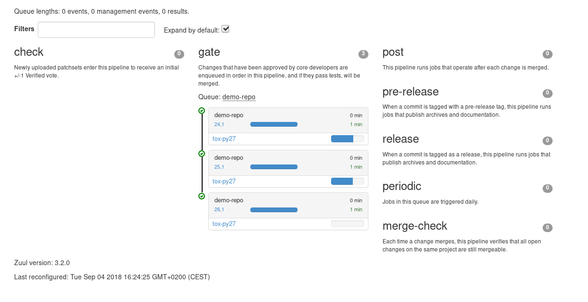
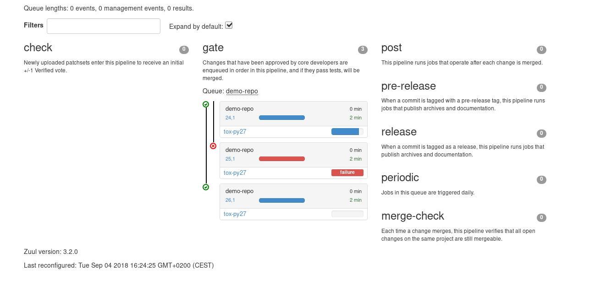
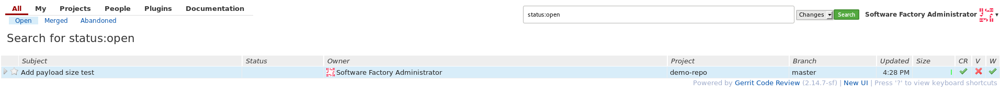

In this article, we will explain one of the most important features of Zuul: the dependent pipeline, also known as the gate pipeline.
This article is part of the Zuul hands-on series.
The examples and commands that follow are intended to be run on a Software Factory sandbox where a demo-repo repository exists. You should have such an environment after following the previous articles in this series:
- To deploy a Software Factory sandbox please read the first article of the series.
- To create the demo-repo repository, please follow the sections Clone the config repository and Define the demo-repo repository sections.
Incidentally, most of the links reference sftests.com which is the default domain of the sandbox. Make sure to adapt the links if necessary.
If you have already deployed a Software Factory sandbox and created a snapshot as suggested, you can restore this snapshot in order to follow this article on a clean environment. In that case make sure the virtual machine's time is correct post restoration. If not fix it by running
systemctl stop ntpd; ntpd -gq; systemctl start ntpd
The broken master phenomenon
Keeping the master branch sane can be difficult when:
- validating a patch takes a long time (eg. complex test suite)
- the amount of patches proposals submitted to a project is quite high
Until now, the best practices to mitigate these problems were to enforce the following:
- run continuous builds and test suites on master after each commit or as often as possible
- have several maintainers granted with the power to reject or accept patches into the project's master branch
These best practices, however, do not guarantee the health of the master branch at any given time. Let's consider this very common scenario on a project with two maintainers, M1 and M2:
- M1 reviews change A before integration: s.he applies A to the current tip of the master branch (HEAD+A) and tests the code. After testing succeeds, M1 refreshes the master branch, commits and pushes A to the remote central repository.
- In the time it took M1 to test and push A, M2 had approved change B and pushed it to the remote repository. This means the master branch history is actually HEAD+B+A, instead of HEAD+A as it was validated by M1.
- Unfortunately, B has side effects on A and the master branch is no longer building or passing tests.
In other words the master branch is broken, and everybody working on the project is impacted in some way, either because their own code won't build, or because they have to figure out the problem and fix it.
Sure, continuous builds help catch the problem as soon as possible, but if building and running tests are costly operations in time and/or resources, and therefore aren't performed after every commit, how many patches might have landed since the breakage, making it even more difficult to pinpoint the change that caused the issue?
One could also object that maintainers just have to always make sure to validate patches on the latest version of the master branch, but it might just be too hard to enforce manually in projects where commits can occur faster than testing or building. One would have to implement some form of "merging semaphore", meaning that maintainers would have to wait on each other, beating the purpose of having several of them in the first place.
But what if we could avoid that trouble altogether and guarantee by design of the integration pipeline that the master branch can pass tests and build at all times?
Zuul, the gate keeper
The trick is to deport the merging powers of the maintainers to a single, automated "gate keeper". Maintainers approve patches for merging, and the gate keeper makes sure they can land without breaking the master branch.
Enter Zuul:
Thanks to its gate pipeline, Zuul decides whether a patch can be merged into the master branch or not, by ensuring the patch is always tested over the latest version of master prior to merging. This pipeline is designed to avoid breaking the master branch.
The gate pipeline takes care of the git rebases in order to run CI job(s) on the expected state of the master at the time the patch will be merged. This is called speculative testing. Let's see how it changes the previous scenario, this time in chronological order:
- Maintainer M2 approves change B for merging. Zuul gates it by running the acceptance tests on HEAD+B.
- Maintainer M1 approves change A for merging as Zuul is still in the process of gating B. Zuul gates it by running the acceptance tests on HEAD+B+A. This is where the speculation bit occurs, since B isn't in master yet but is expected to land before A, assuming its gating ends with success.
- Testing on HEAD+B succeeds, B is merged into the master branch.
- Testing on HEAD+B+A fails, A is rejected. The maintainer or A's author must rework it.
(for simplicity's sake, we'll call acceptance tests, builds, and generally any kind of automation used to validate a patch "jobs".)
The gate pipeline ensures that the merging order of patches is the same as their approval order. If jobs for change B, that is on top of the gate pipeline, are still running when all jobs for change A have succeeded, then zuul will wait for B's jobs to finish to merge B then A.
What happens if B is rejected, though? The gate pipeline is able to discard failing patches and rebase subsequent changes in order to optimize testing time. For example, let's imagine changes A, B and C have entered the gate pipeline in that order, and that a job fails when B is on top of A. The pipeline will evolve like so:
- HEAD + A
- HEAD + A + B
- HEAD + A + B + C
- HEAD + A
- HEAD + A + B FAIL
- HEAD + A + B + C CANCELED
- HEAD + A
- HEAD + A + C REBASED AND RESTARTED
Instead of waiting for C's jobs that will propably fail as B introduced an issue, Zuul immediately cancels C's jobs, rebases C on A and restarts C's jobs. Zuul reports the issue for B on the code review system.
Let's test it
Clone the demo-repo and provision it with this demo code .
git clone -c http.sslVerify=false https://sftests.com/r/demo-repo
cd demo-repo
git review -s # Enter admin as username
tar -xzf /tmp/hoz-4-demo-repo.tgz -C .
Then, we are going to:
- define the demo-repo project's pipelines
- modify the project's tox configuration to add some delaying in the CI process
- submit and approve three patches to simulate how Zuul detects a future broken master and discards the broken patch.
Setup CI jobs
First, in .zuul.yaml, define the project's pipelines. We use the virtual job noop in the check pipeline to force Zuul to return a positive CI note +1 Verified.
- project:
check:
jobs:
- noop
gate:
jobs:
- tox-py27
Second, create the script trigger.sh in order to better highlight the gate pipeline's specificities in the status page. It adds some delay in the job's execution time based on the existence of some files at the root of the project.
#!/bin/bash
if [ -f c3 ]; then
sleep 20
exit 0
fi
if [ -f c2 ]; then
exit 0
fi
if [ -f c1 ]; then
sleep 90
exit 0
fi
We make sure this script runs prior to unit testing by modifying the tox.ini file as indicated below.
[tox]
envlist = pep8,py27
[testenv]
whitelist_externals = *
deps = nose
commands =
./trigger.sh
nosetests -v
[testenv:pep8]
deps = flake8
commands = flake8
Finally, submit the change on Gerrit:
chmod +x trigger.sh
git add -A .
git commit -m"Init demo-repo pipelines"
git review
Do not forget to approve the patch to let it land.
Run the scenario
In this scenario we propose three changes:
- The first change (A) changes the value returned by the run method.
- The second change (B) adds a test to verify the length of the string returned by the run method is less than ten characters. This change simulates a situation where the unit tests pass when based on the tip of master but fail when rebased on (A).
- The third patch (C) adds a README.md file to the project. Its purpose is to see how Zuul rebases it on (A), once the issue with (B) is detected.
Patches are available in this archive.
# Reset local copy to the base commit
git reset --hard $(git log --pretty=oneline | grep "Init demo-repo pipelines" | awk {'print $1'} | head -1)
git am ../A.patch && git review -i
# Reset local copy to the base commit
git reset --hard HEAD^1
git am ../B.patch && git review -i
# Reset local copy to the base commit
git reset --hard HEAD^1
git am ../C.patch && git review -i
In the gate pipeline, before merging the changes, Zuul will test them speculatively.
Let's approve all of them in the right order.
cmsgs=("Change run payload" "Add payload size test" "Add project readme file");
for msg in $cmsgs;
do
rn=$(python -c "
import sys,json,requests;
from requests.packages.urllib3.exceptions import InsecureRequestWarning;requests.packages.urllib3.disable_warnings(InsecureRequestWarning);
changes=json.loads(requests.get('https://sftests.com/r/changes/', verify=False).text[5:]);
m=[c for c in changes if c['subject'] == sys.argv[1]][0];
print ( m['_number'] )" $msg);
echo "Set change approval (CR+2 and W+1) on change $rn,1";
ssh -p 29418 admin@sftests.com gerrit review $rn,1 --code-review +2 --workflow +1;
done
Then have a look at Zuul's status page (sftests.com).
You should soon observe that Zuul has canceled the running job for C, and rebased it on change A as B introduces an issue when rebased on A. Zuul won't merge B but will report the failure on Gerrit; A and C will build successfully and be merged.
 Let's have a look at the Zuul Scheduler's logs (/var/log/zuul/scheduler.log), try ssh to sftests.com virtual machine:
The executor is told to start the tox-py27 job for change 25 (rebased on 24)
2018-09-04 10:25:44,795 INFO zuul.ExecutorClient: Execute job tox-py27 (uuid: 93dd828f3e62481e88f329f2eeed2608) on nodes <NodeSet OrderedDict([(('container',), <Node 0000000030 ('container',):runc-centos>)])OrderedDict()> for change <Change 0x7f53140ffd30 25,1> with dependent changes [{'change': '24', 'branch': 'master', 'change_url': 'https://sftests.com/r/24', 'project': {'short_name': 'demo-repo', 'canonical_hostname': 'sftests.com', 'canonical_name': 'sftests.com/demo-repo', 'src_dir': 'src/sftests.com/demo-repo', 'name': 'demo-repo'}, 'patchset': '1'}, {'change': '25', 'branch': 'master', 'change_url': 'https://sftests.com/r/25', 'project': {'short_name': 'demo-repo', 'canonical_hostname': 'sftests.com', 'canonical_name': 'sftests.com/demo-repo', 'src_dir': 'src/sftests.com/demo-repo', 'name': 'demo-repo'}, 'patchset': '1'}]
# job started
2018-09-04 10:25:50,533 INFO zuul.ExecutorClient: Build <gear.Job 0x7f5314138080 handle: b'H:10.0.2.15:17' name: executor:execute unique: 93dd828f3e62481e88f329f2eeed2608> started
[...]
The executor process reports the issue to the scheduler
2018-09-04 10:27:25,748 INFO zuul.ExecutorClient: Build <gear.Job 0x7f5314138080 handle: b'H:10.0.2.15:17' name: executor:execute unique: 93dd828f3e62481e88f329f2eeed2608> complete, result FAILURE
# the scheduler detects the nearest change in the queue is a failure so 26 is rebased on 24
2018-09-04 10:27:25,769 INFO zuul.Pipeline.local.gate: Resetting builds for change <Change 0x7f5319341e10 26,1> because the item ahead, <QueueItem 0x7f5318208400 for <Change 0x7f53140ffd30 25,1> in gate>, is not the nearest non-failing item, <QueueItem 0x7f53140934a8 for <Change 0x7f5314096390 24,1> in gate>
[...]
Restart the tox-py27 job with the updated context
2018-09-04 10:27:35,513 INFO zuul.ExecutorClient: Execute job tox-py27 (uuid: adfe76dd347e4b0fba56395a319ac67a) on nodes <NodeSet OrderedDict([(('container',), <Node 0000000033 ('container',):runc-centos>)])OrderedDict()> for change <Change 0x7f5319341e10 26,1> with dependent changes [{'change': '24', 'branch': 'master', 'change_url': 'https://sftests.com/r/24', 'project': {'short_name': 'demo-repo', 'canonical_hostname': 'sftests.com', 'canonical_name': 'sftests.com/demo-repo', 'src_dir': 'src/sftests.com/demo-repo', 'name': 'demo-repo'}, 'patchset': '1'}, {'change': '26', 'branch': 'master', 'change_url': 'https://sftests.com/r/26', 'project': {'short_name': 'demo-repo', 'canonical_hostname': 'sftests.com', 'canonical_name': 'sftests.com/demo-repo', 'src_dir': 'src/sftests.com/demo-repo', 'name': 'demo-repo'}, 'patchset': '1'}]
Conclusion
Zuul's dependent pipeline is an elegant way to ensure the health of code repositories at all times, allowing developers to focus on more important things like new features, and expanding and automating test coverage.
In this article, we showcased a simple use case but the features of the dependent pipeline also apply to complex project testing scenarios (supported by Zuul) like:
- multiple, parallelized jobs
- cross projects testing
- multi nodes jobs
This concludes this article about the gate pipeline. Stay tuned for the next article about Zuul secrets usage.